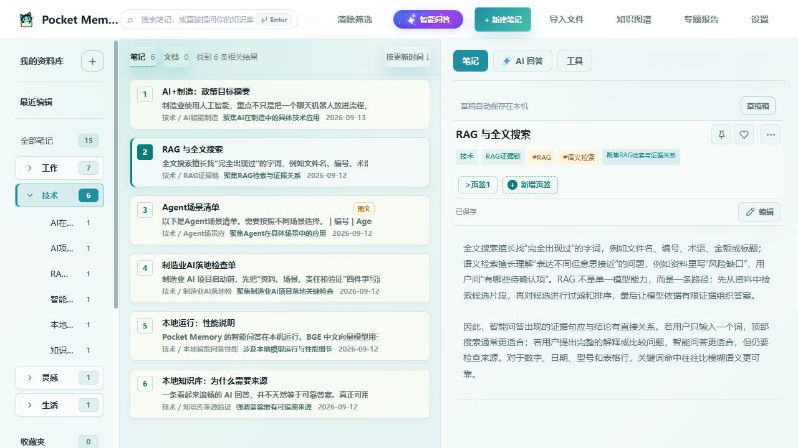
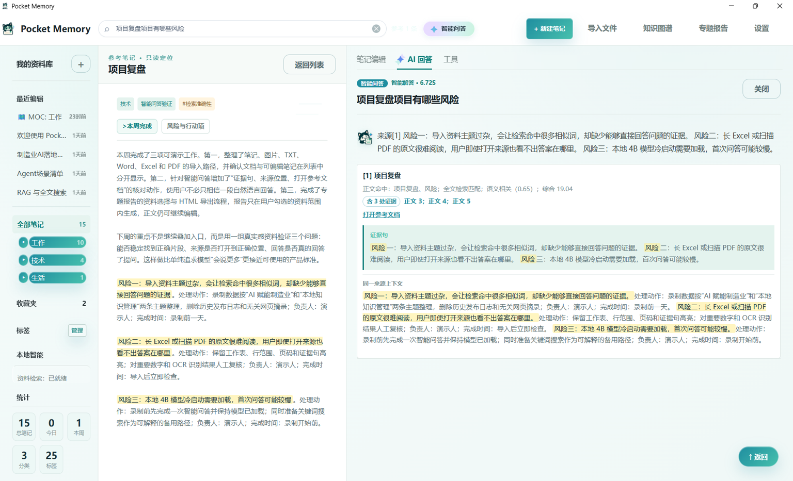
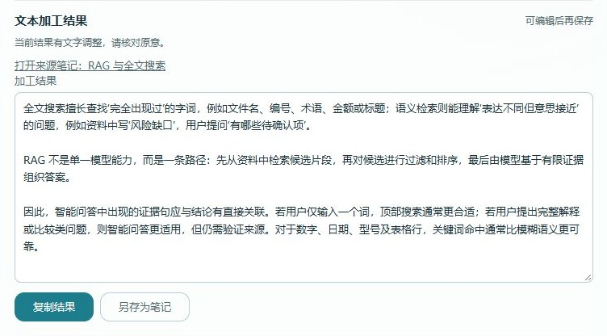
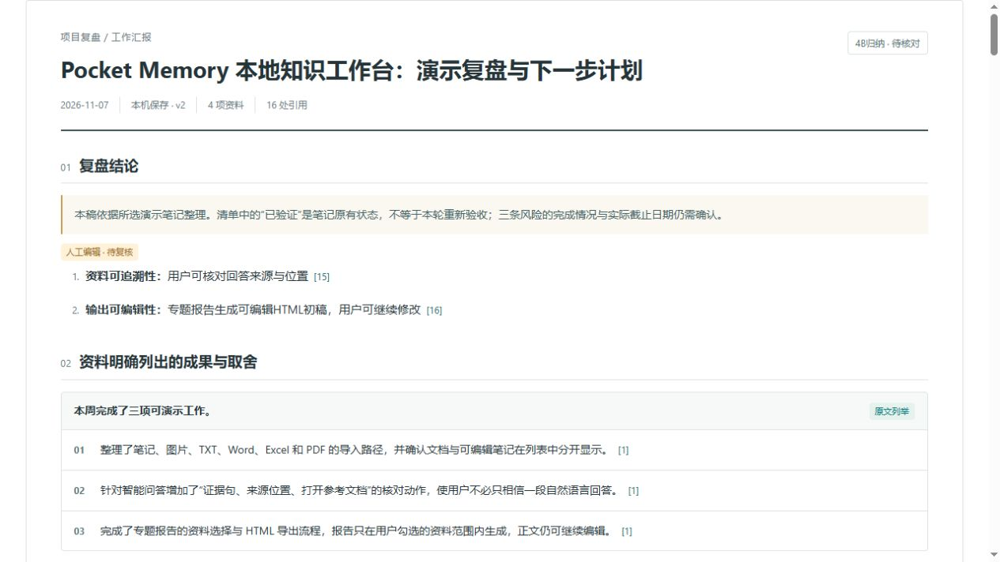
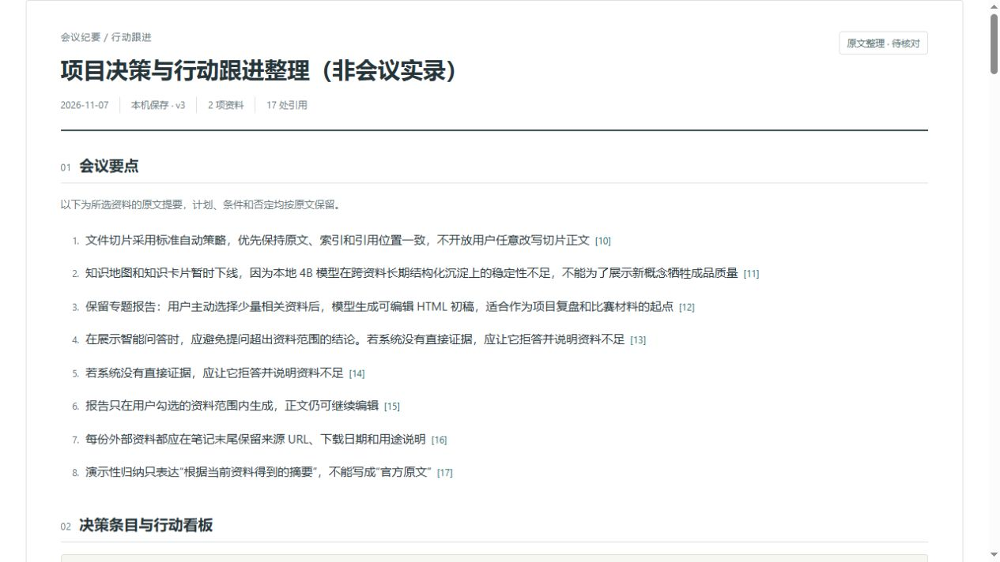

从一条记录开始
用笔记与多页签记下想法和项目过程；分类、标签、收藏和历史版本，方便长期维护。
随手记 · 你的本地资料工作台
随手记录，导入文件，把有关的笔记连起来。
需要时直接提问，沿着出处核对，再整理成一份报告。
让资料积累下来
会议、项目、学习，每天都会留下一些资料。把它们放在同一个地方，按自己的习惯整理，查找时不用再翻遍文件夹。
用笔记与多页签记下想法和项目过程；分类、标签、收藏和历史版本，方便长期维护。
Word、PDF、Excel、TXT 和图片进入同一资料库。原文件继续保留，正文和识别出的文字都可以搜索。
智能问答展示来源与证据片段。打开原文，核对条件和数字，再决定怎样使用这份回答。
操作演示
记录、导入、提问、核对来源，
从一次实际操作开始了解。
视频暂时无法加载，请稍后刷新重试。
CORE CAPABILITIES
会议记录、项目资料、学习材料和工作文档，可以在这里持续整理。写下来的内容、导入的文件和笔记之间的联系，都能接着积累。
同一个主题可拆成多个页签，例如“背景、方案、风险、行动项”。支持富文本、表格、图片、链接、颜色、历史版本，以及分区、收藏与置顶，既适合快速记录，也能承载长期维护。
怎么用：点击 新建笔记 后直接在右侧工作区写作；需要展开同一主题时，用 新增页签 管理，不必把所有内容塞进一篇超长正文。
导入 TXT、DOCX、XLSX、PDF 和图片后，系统保留原始附件，并按标题、段落、页码、工作表和表格行等结构建立可定位内容。图片与扫描件可使用本地 OCR 提取文字，原件、切片与检索位置可以分别查看。
怎么用：在 导入文件 中选择多个文件或一个文件夹；文档默认在“文档”视图集中查看，可重建索引、替换原件、下载原件，或从智能问答直接打开命中的位置。
在笔记中通过链接引用另一篇笔记，阅读时可点击跳转到目标内容。系统同时保留反向关系，因此一篇项目笔记被哪些专题、复盘或行动项引用，不必靠人工回忆。
怎么用：在正文中插入并选择目标笔记；阅读引用时点击链接进入 只读参考笔记，核对后可返回原笔记继续编辑，避免误改来源内容。
知识图谱以笔记间的双链和共用标签为线索展示关联，也能显示孤立笔记。它适合发现某个项目、主题或标签周边已经积累了什么，以及哪些资料还没有被纳入任何脉络。
怎么用：打开 知识图谱，按标题或标签筛选；勾选“显示孤立笔记”检查未关联内容。图谱用于浏览与整理，不参与智能问答的默认证据库。
系统可根据笔记内容给出分类与标签建议，建议由你确认和调整。分类路径、手工移动、排序、收藏和置顶共同解决“资料越来越多以后找不到”的问题。
怎么用：先用分区表达稳定结构，用收藏表达高频资料；对 AI 建议的标签保持审阅，不需要的标签可以直接删掉，保持标签清晰。

一个界面完成资料浏览、笔记编辑、智能问答和证据核对；左右分栏可根据使用习惯调整宽度。
TRACEABLE LOCAL RAG
Pocket Memory 的智能回答先在用户自己的笔记和文件中检索证据，再用本地模型组织结论。回答里的来源编号连接到原文，重要结论可以逐项核对。
笔记页签、导入文件、图片 OCR 同时保存原文、类型与定位信息。
结合问题里的对象、字段和范围，查找相关资料。对象和范围越清楚，越方便核对。
全文检索擅长术语、编号、金额和日期；BGE 向量检索补充同义表达。
对候选切片按问题匹配度与结构重排，减少只有相似词却答非所问的情况。
回答返回证据句、来源与打开参考文档入口；资料不足时应明确提示。

待办与文字助手
一段会议记录、一条工作消息、一份说明，从已有文字出发，整理下一步要做的事，或把表达调整得更通顺。
每次不超过 1000 字，最多提取 8 条待办。原文没写明的负责人或期限留空，提醒时间由你选择。
处理结果不会覆盖原文。润色后仍请核对原意、姓名、数字和日期。
工具中还保留提醒与番茄钟，方便安排当下的工作。

专题报告
选择 1–8 份相关笔记或文档，生成报告初稿。整理工作进展，梳理观点和行动项；正文便于阅读，来源按需展开核对；补充说明后，导出一个用浏览器就能打开的文件。
把完成的工作、做过的取舍和待处理的风险集中呈现。状态图表附有统计依据，关键内容可以沿引用查回原文。
以下样例使用本项目演示资料，可打开完整报告查看图表和引用附录。

从项目记录中整理已决定的事项、责任和后续行动。没有写明的信息留待确认，方便继续补充。
此样例由项目笔记整理为行动跟进材料，非会议实录。

整理观点、依据、分歧与待核实事项。
比较方案的差异、适用条件和需要补充的信息。
说明目标、方案组成、当前进展和实施条件。
梳理概念、区别、操作要点与原文依据。
资料中有可识别的状态表时，报告可附统计图表。生成后请核对重要事实和数字，再用于分享或汇报。
数据安全与自主掌控
资料保存在你的电脑，AI 处理也在本机完成。从保存、恢复到备份与迁移，每一步都有明确的操作入口。
笔记、页签和原始附件保存在你选择的本机资料目录，文件位置清楚，资料可以自行管理。
检索、问答、报告、文字助手和图片识别使用本地组件，不把资料提交给云端模型。
笔记保留历史版本，未完成内容可从草稿箱继续编辑。切换笔记时保留草稿，恢复遇到版本冲突时可另存副本。
可导出包含笔记、页签和附件的 ZIP 备份。解压后，在设置中切换到该资料目录，即可继续使用。
新版本发布后，可在「设置 → 软件更新」更新程序；常规程序更新保留本地模型、资料和配置，无需重新下载完整包。
笔记和文件保存在本机，问答与报告使用本地模型，不把资料发送给云端模型。
可以，无需独立显卡。回答速度取决于电脑性能、可用内存、资料长度和正在运行的软件。
需要。复杂问题或识别不清的扫描件可能漏答、错引；重要结论请通过来源核对，报告初稿审阅后再使用。
不会。先生成可以核对、修改的结果，待办确认后保存；文字结果可复制或另存为新笔记。润色后仍需核对原意、姓名、数字和日期。
可以导出单文件 HTML，用浏览器打开。报告保留引用及相关依据；接收者不会自动得到整个资料库。分享前请检查报告内的来源和明细是否适合分享。
完整离线包已经包含现有 4B 模型和所需组件。完整解压后运行 PocketMemory.exe。
在「设置 → 软件更新」检查并安装新版本。常规程序更新保留本地模型、资料和配置，失败时支持回退。